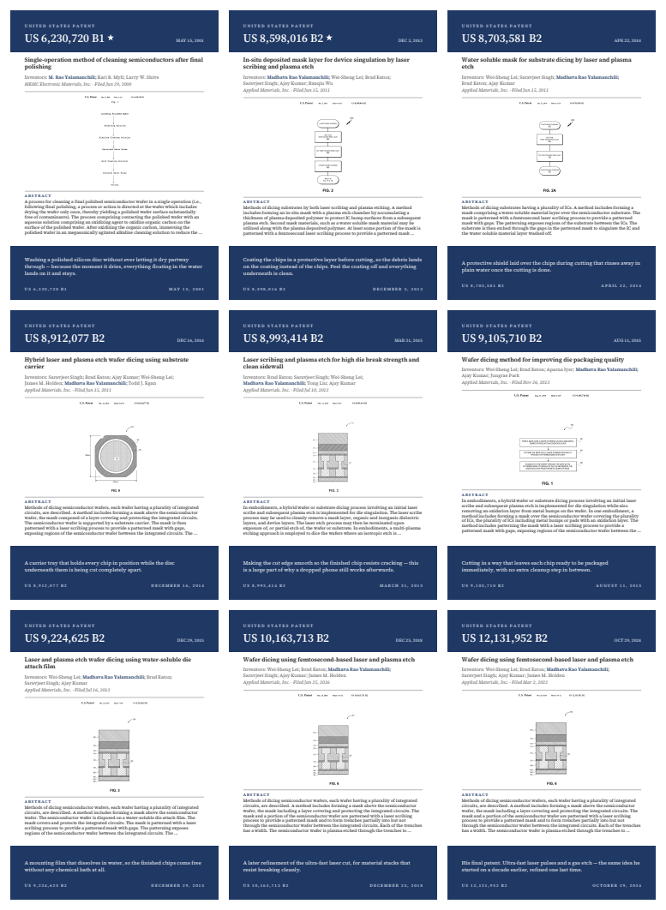
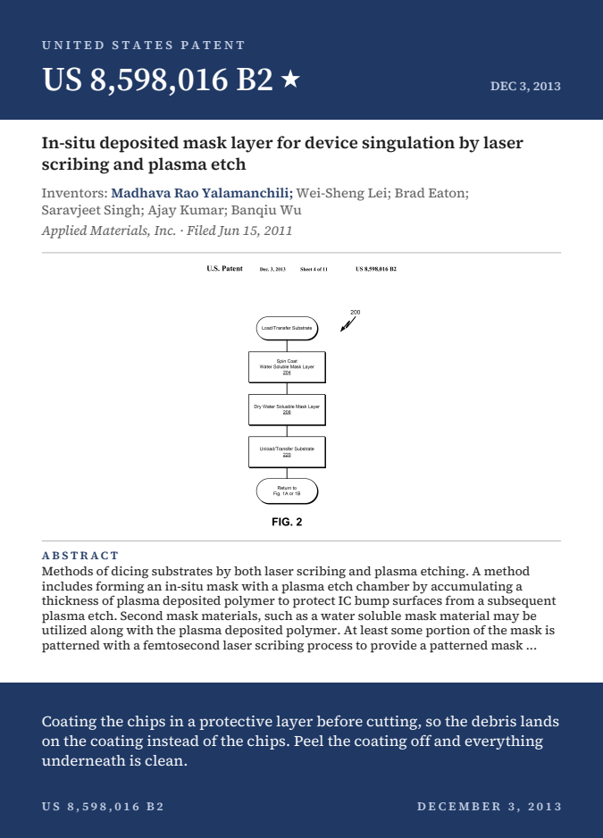
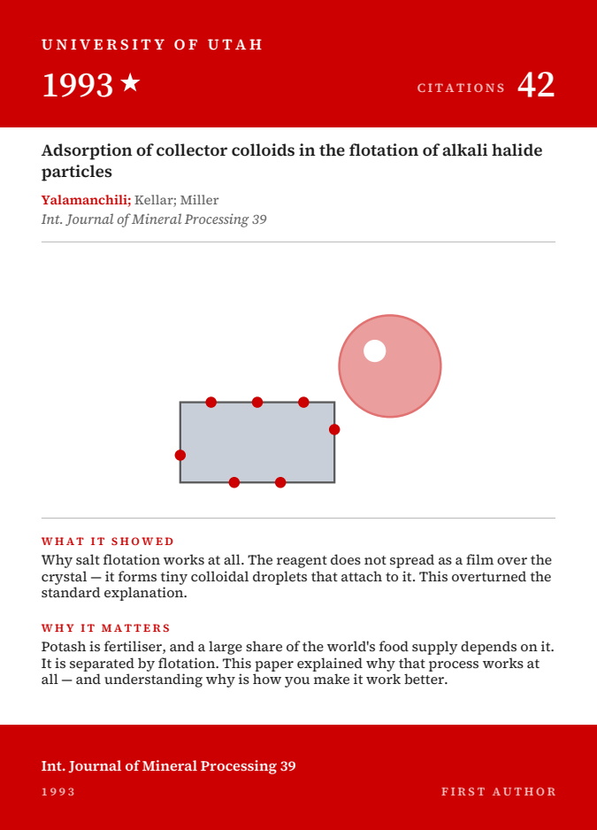
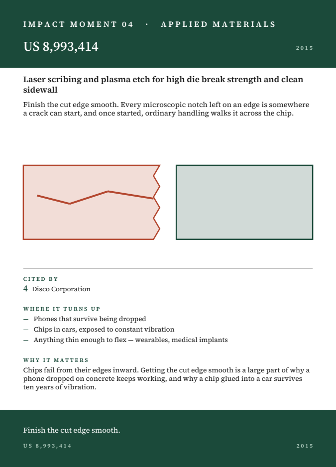
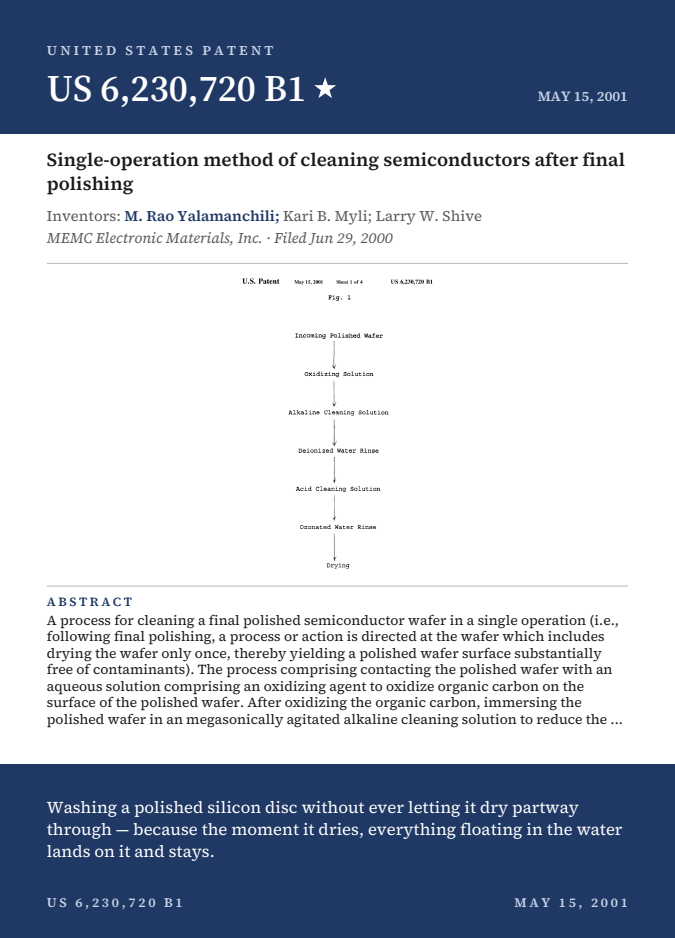
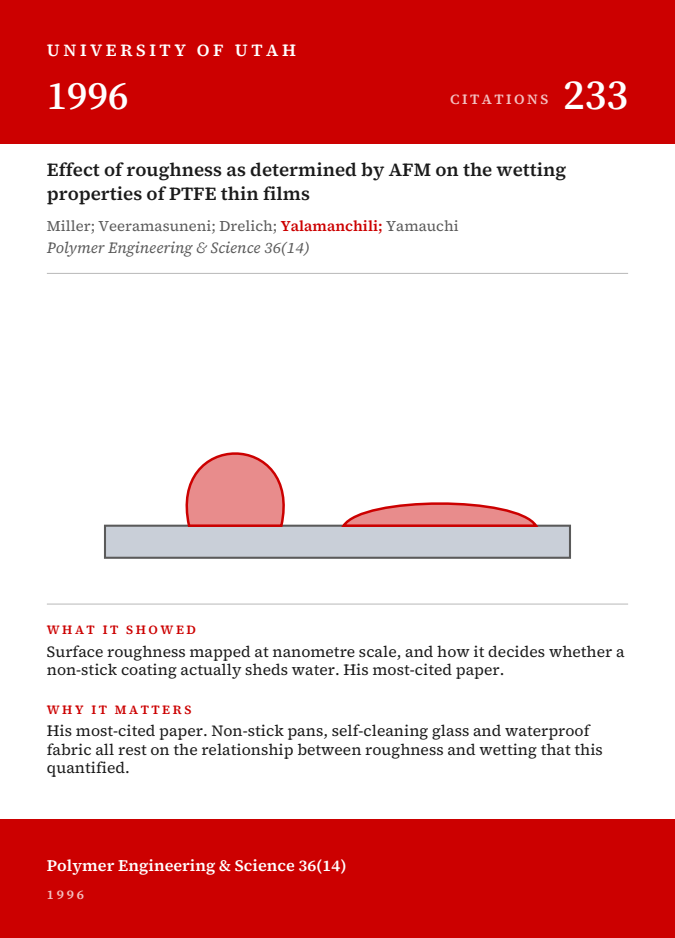
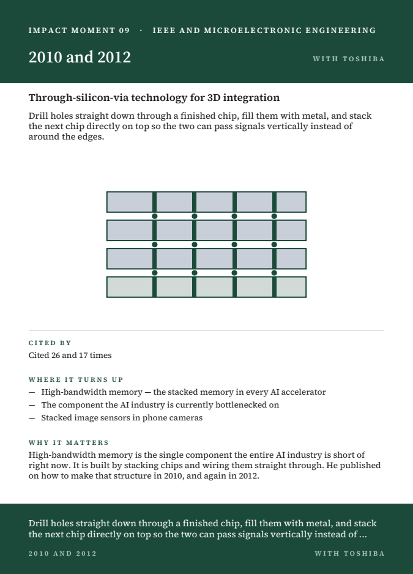
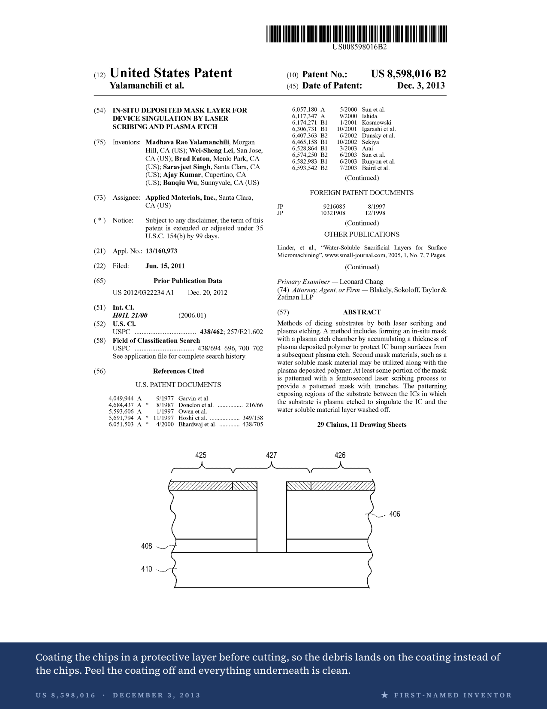
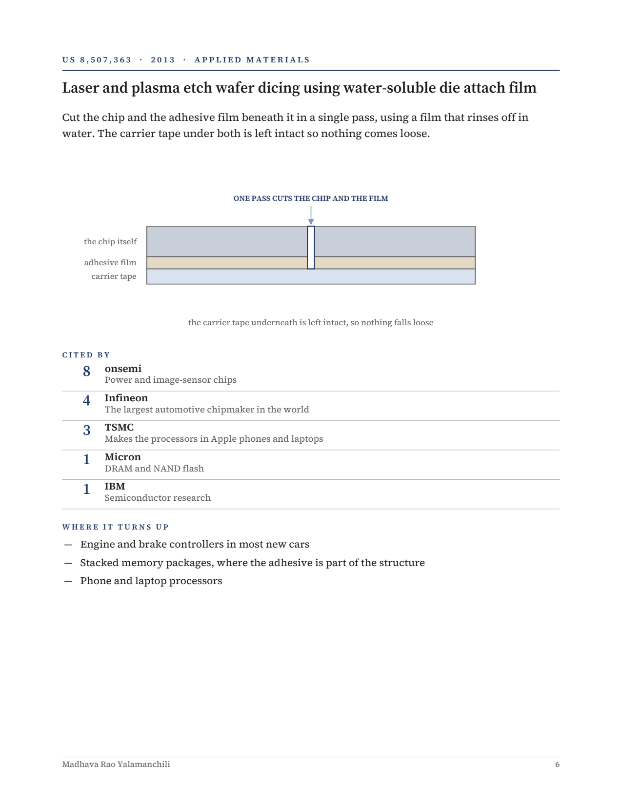

PROJECT WRITE-UP · AUG 2026
the retirement display
For my father's retirement ceremony, we wanted his work on the table in a form guests could actually read — including guests with no semiconductor background. The approach: every patent and paper gets a card carrying the official document's own drawing, a one-sentence plain-English description of what it does, and a short note on why it matters. The result: three postcard decks, an illustrated book, a rebuilt career record, and a pipeline that regenerates all of it from primary sources with one command.

NINE OF THE FORTY-THREE PATENT CARDS — EACH A MINIATURE PATENT FRONT PAGE WITH THE PATENT'S OWN DRAWING
the career, in one paragraph
He asked one question for thirty-four years: what happens where a solid meets a liquid? It started at the University of Utah — a PhD and postdoctoral work in flotation and surface chemistry, salt crystals in brine. Then MEMC Electronic Materials, leading 300 mm wafer-cleaning projects; SCP Global Technologies, single-wafer wet processing; and nearly two decades at Applied Materials, moving from wafer cleaning to wafer dicing to EUV photomasks — the machines that print the most advanced chips made today. Along the way: 43 granted US patents, ~37 publications, and more than 900 citations of his published work. The impact is easiest to see in who cites the patents: TSMC, Samsung, IBM, Intel, Micron, Infineon, and onsemi all list his work as prior art — and his patent on cutting wafers without a saw is cited by Disco Corporation, the company that builds most of the world's wafer saws. His 2010–2012 papers on through-silicon vias described the stacking technique that now underpins high-bandwidth memory — the part the AI industry is short of — more than a decade early. His last paper — a 2024 SPIE photomask study with Applied Materials, HOYA, and Photronics — was published in his final working year.
the list was wrong in both directions
The family's list said 39 patents. The right answer was 43 — and getting there was most of the project.
Google Patents' inventor index returns only 25 grants under his full name — against a known 39. Searching the variant "Rao Yalamanchili" returns more, mixed with fin-stabilized ammunition and percussion primers from a US Army ordnance researcher who shares the surname. At least five unrelated people publish under "Yalamanchili," including one with the same full name in an adjacent industry. That is how a family arrives at "about fifty patents" without anyone being wrong on purpose.
The rebuild ran in five steps:
- Name variants. He appears in patent records as "Madhava Rao Yalamanchili" and "M. Rao Yalamanchili." Neither "Madhava R. Yalamanchili" nor "Madhava Yalamanchili" returns anything.
- Search by employer, not by name. Assignee queries are
independent of the broken inventor index:
assignee="SCP Global Technologies"plus the surname returned exactly one patent, andassignee="SunEdison"(MEMC's later name) one more. Neither early-career grant was on the family's list. - A second index. FreePatentsOnline returned 48 records for the surname; nine were his and absent from every previous search, including a late run — 2018, 2020, 2021, 2023 — that no index had tied to him.
- Exclusions. Five grants belonged to the ordnance researcher; three more (continuous-casting slag from 1972, alumina chlorination from 1986) predate his career entirely.
- Verification. All 43 USPTO documents were downloaded and the inventor block read on each; two were additionally spot-checked at high magnification against his name and city of record.
His publication record had the same disease. The authoritative bibliography was a Department of Energy grant report covering 1992–1998 — the university years. In academia he published as "M. R. Yalamanchili"; in industry he publishes as "Rao Yalamanchili," so any filter keyed on the first initial silently drops twenty-six years. Widening it surfaced eleven more papers, 2003–2024, including work with Samsung, a through-silicon-via paper with Toshiba, and four SPIE photomask papers — the last published in his final working year.
what got built
| Patent postcards — navy, one per patent | 43 CARDS |
| University of Utah deck — crimson | 18 CARDS |
| Most-cited work deck — deep green | 10 CARDS |
| Letter-size patent series, one official front page per patent | 43 PAGES |
| Illustrated impact book | 10 PAGES |
| Display summary + stories two-pager | 8 + 2 PAGES |
Everything is print-ready: 4.25 × 6 in trim plus 0.125 in bleed on every side, live matter held 0.1875 in inside the trim, all fonts embedded, one card per page. Nothing is laid out by hand — every deliverable is generated by script, so a corrected title or a recount rebuilds the whole set.



ONE CARD FROM EACH DECK: PATENTS IN NAVY, UTAH PAPERS IN CRIMSON, MOST-CITED WORK IN GREEN



THE US 6,230,720 CARD (LEFT) CARRIES THE FIG. 1 FLOWCHART THE PAGE CLASSIFIER INITIALLY MISSED — SEE BELOW
the pipeline
python3 scripts/fetch_patents.py # download the 43 patent PDFs from USPTO
python3 scripts/extract_figs.py # find the drawing sheet inside each scan
python3 scripts/build_series.py # the 43-page letter series
python3 scripts/postcards.py # the three postcard decks
python3 scripts/impact_book.py # the illustrated book
python3 scripts/display_document.py # the summary document
python3 scripts/stories.py # the two-pager
Python end to end: reportlab for layout, pymupdf for
reading the patent scans, pypdfium2 and pillow for
rendering, Crossref for citation counts. A shared design.py holds
the palette, the embedded serif family, and the drawing helpers, so all seven
deliverables come out looking like one system.
the technically hard part: finding a drawing in a scan
USPTO patent PDFs are image-only scans — no text layer, so you cannot locate the drawings by searching for "FIG." The naive rule, "take page 2," produced a wall of tiny citation text on several patents: page 2 is an overflow references list whenever the front page runs long.
The fix was to classify pages by ink shape. Render each page, profile the ink row by row, and the two page types separate cleanly: body text shows 80–130 evenly spaced ink bands at roughly 9% coverage; a drawing sheet is sparse line art with far fewer bands at 1–5%. One refinement survived contact with the data — on one patent a nearly empty data table beat the real figure by a single band, so the rule became "the earliest sheet within reach of the sparsest," because drawings precede tables in a patent. That correction made the card for US 6,230,720 land on Fig. 1, a process flowchart — which, for a patent about never letting a wafer dry mid-process, is the argument.
Smaller lies the data told along the way:
- Seven patent titles arrived truncated with a literal
…entity — which printed on the cards until caught. - One patent's assignee came back as a holding company — the current assignee, not the employer at the time of grant. The cards use the grant-time assignee.
- Two independent sources disagreed with Crossref on a 1996 journal issue number. Two against one: the sources won.

THE LETTER SERIES: EACH PAGE IS THE OFFICIAL USPTO FRONT PAGE PLUS A PLAIN-ENGLISH STRIP FOR NON-TECHNICAL READERS
typography at postcard scale
The book's diagrams carry small captions that vanish at 3.5 inches, so the postcard artwork was redrawn caption-free with heavier strokes — fifteen vector illustrations, each parameterized by accent color so identical art renders correctly in navy, crimson, or green. When the decks moved from 3.5 × 5 to 4.25 × 6, nothing was stretched: both card layouts scale off trim height, so band heights, figure size, type, and leading grow together. That lifted the abstract text from 5.5 pt to a readable 6.6 pt.

A PAGE FROM THE TEN-PAGE IMPACT BOOK — DIAGRAMS REDRAWN AT FULL SCALE, THEN SIMPLIFIED FOR THE CARDS
what the record shows
Forward citations turn a vague claim into a checkable one: when a company files a patent, the filing lists the prior art its engineers and the examiner identified. Across a ten-patent sample, his work is cited by TSMC, Samsung, IBM, Intel, Micron, Infineon, and onsemi. Two specifics: US 8,598,016, on singulating a wafer by laser scribe and plasma etch rather than a saw, is cited twice by Disco Corporation — the dominant manufacturer of wafer-cutting saws. US 9,177,864 is cited by exactly two patents, both held by TSMC.
A citation is not a shipment — it documents that another company's engineers or a patent examiner identified the work as relevant prior art, not that a method shipped in a product. The display materials state this in print, and so does this page. The counts themselves: more than nine hundred citations of his published work (a floor — Crossref misses conference proceedings, books, and all patent citations), and an h-index of 16 on the same undercount.